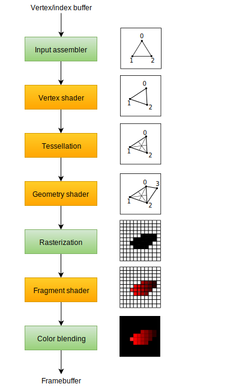

Introduction
Code: main.rs
Over the course of the next few chapters we'll be setting up a graphics pipeline that is configured to draw our first triangle. The graphics pipeline is the sequence of operations that take the vertices and textures of your meshes all the way to the pixels in the render targets. A simplified overview is displayed below:

The input assembler collects the raw vertex data from the buffers you specify and may also use an index buffer to repeat certain elements without having to duplicate the vertex data itself.
The vertex shader is run for every vertex and generally applies transformations to turn vertex positions from model space to screen space. It also passes per-vertex data down the pipeline.
The tessellation shaders allow you to subdivide geometry based on certain rules to increase the mesh quality. This is often used to make surfaces like brick walls and staircases look less flat when they are nearby.
The geometry shader is run on every primitive (triangle, line, point) and can discard it or output more primitives than came in. This is similar to the tessellation shader, but much more flexible. However, it is not used much in today's applications because the performance is not that good on most graphics cards except for Intel's integrated GPUs.
The rasterization stage discretizes the primitives into fragments. These are the pixel elements that they fill on the framebuffer. Any fragments that fall outside the screen are discarded and the attributes outputted by the vertex shader are interpolated across the fragments, as shown in the figure. Usually the fragments that are behind other primitive fragments are also discarded here because of depth testing.
The fragment shader is invoked for every fragment that survives and determines which framebuffer(s) the fragments are written to and with which color and depth values. It can do this using the interpolated data from the vertex shader, which can include things like texture coordinates and normals for lighting.
The color blending stage applies operations to mix different fragments that map to the same pixel in the framebuffer. Fragments can simply overwrite each other, add up or be mixed based upon transparency.
Stages with a green color are known as fixed-function stages. These stages allow you to tweak their operations using parameters, but the way they work is predefined.
Stages with an orange color on the other hand are programmable, which means that you can upload your own code to the graphics card to apply exactly the operations you want. This allows you to use fragment shaders, for example, to implement anything from texturing and lighting to ray tracers. These programs run on many GPU cores simultaneously to process many objects, like vertices and fragments in parallel.
If you've used older APIs like OpenGL and Direct3D before, then you'll be used to being able to change any pipeline settings at will with calls like glBlendFunc and OMSetBlendState. The graphics pipeline in Vulkan is almost completely immutable, so you must recreate the pipeline from scratch if you want to change shaders, bind different framebuffers or change the blend function. The disadvantage is that you'll have to create a number of pipelines that represent all of the different combinations of states you want to use in your rendering operations. However, because all of the operations you'll be doing in the pipeline are known in advance, the driver can optimize for it much better.
Some of the programmable stages are optional based on what you intend to do. For example, the tessellation and geometry stages can be disabled if you are just drawing simple geometry. If you are only interested in depth values then you can disable the fragment shader stage, which is useful for shadow map generation.
In the next chapter we'll first create the two programmable stages required to put a triangle onto the screen: the vertex shader and fragment shader. The fixed-function configuration like blending mode, viewport, rasterization will be set up in the chapter after that. The final part of setting up the graphics pipeline in Vulkan involves the specification of input and output framebuffers.
Create a create_pipeline function that is called right after create_swapchain_image_views in App::create. We'll work on this function throughout the following chapters.
impl App {
unsafe fn create(window: &Window) -> Result<Self> {
// ...
create_swapchain_image_views(&device, &mut data)?;
create_pipeline(&device, &mut data)?;
// ...
}
}
unsafe fn create_pipeline(device: &Device, data: &mut AppData) -> Result<()> {
Ok(())
}